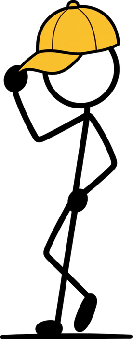

Our story
a cafe on sheridan road

Yellow Cap Cafe is a small, independent coffee shop at 6466 N Sheridan Road, in Rogers Park. One room, a counter, and a short menu we intend to do properly.
The yellow cap is the whole idea, really. It is meant to read as a tip of the hat on the way past: come in, sit down, take your time. We would rather be the place you stop at every morning than the one you visit once.
We are still settling the menu. Hours and everything we pour will be published here as soon as they are confirmed.
good coffee, good days
What we are going for

a short menu
A handful of things done properly, rather than a long list done roughly.

familiar faces
The same people behind the counter, so your order gets learned.

a room to sit in
Stay for one at the counter or settle in for the morning. Both are fine.
Yellow Cap Coffee
coffee for the everyday